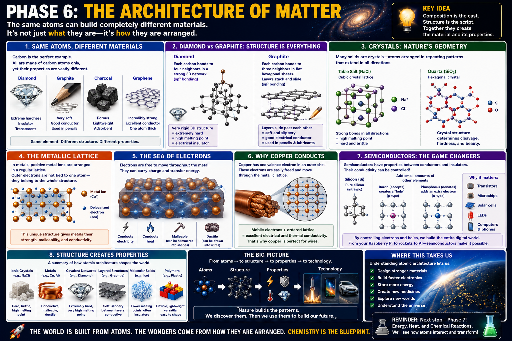

Rigid 3D carbon network
Diamond is made only of carbon, but each carbon atom bonds strongly in a three-dimensional framework. That architecture produces extreme hardness and transparency.
Chemistry · Structure · Materials · Technology
A lesson for Klins on one of chemistry’s biggest ideas: the same atoms can create very different materials depending on how those atoms are arranged. Structure is what turns carbon into diamond, graphite, charcoal, or graphene—and what turns silicon into the foundation of electronics.

The identity of the atoms matters, but arrangement matters just as much.
Diamond is made only of carbon, but each carbon atom bonds strongly in a three-dimensional framework. That architecture produces extreme hardness and transparency.
Graphite is also pure carbon, but its atoms form flat sheets that slide over one another. That makes it soft, slippery, and electrically conductive.
Charcoal has a more irregular structure with pores and internal surface area, which helps it adsorb substances.
Graphene is one atom thick, extraordinarily strong, and an excellent conductor. It shows how changing dimensionality changes behavior.
“What is it made of?” is only half the question. The other half is “How are the particles arranged?” The answer to that second question often explains hardness, conductivity, brittleness, flexibility, transparency, melting point, and usefulness.
These are one of the best examples of structure creating property.
Many solids are built from repeating atomic patterns called crystal lattices.
In sodium chloride, positive sodium ions and negative chloride ions alternate in a regular three-dimensional pattern. Strong attraction exists in all directions, which helps explain salt’s hardness and brittleness.
Quartz forms a repeating network of silicon and oxygen. Its crystal architecture influences hardness, fracture, and external crystal shape.
Metals behave differently because their atoms are arranged and bonded differently.
In a metal, positive metal ions occupy a repeating lattice rather than forming separate molecules.
Outer electrons are not tied to one atom. They are shared throughout the structure as a mobile “sea” of electrons.
This architecture gives metals conductivity, malleability, ductility, and often high thermal conductivity.
Copper’s usefulness in wire comes from its atomic architecture.
Copper has an outer electron that can move readily through the metallic lattice. Because many such electrons are mobile, electrical charge can travel efficiently through the metal.
Copper combines conductivity with ductility. It can be drawn into wires without breaking easily, which is why it is so widely used in electrical systems.
Semiconductors sit between conductors and insulators.
Silicon forms a covalent network with conductivity that is limited but controllable. That controllability is the key to semiconductor behavior.
Adding tiny amounts of other elements changes how electrons move. Boron can create “holes” (p-type), while phosphorus can donate extra electrons (n-type).
Controlled semiconductor behavior makes transistors, microchips, solar cells, LEDs, computers, and phones possible.
Different architectures lead to different material behaviors.
Hard, brittle, often high melting point.
Conductive, malleable, ductile, thermally conductive.
Very hard, strong bonds, often very high melting point.
Soft or slippery in one direction, often conductive within layers.
Often lower melting points and weaker intermolecular attractions.
Flexible, lightweight, versatile, shaped by long repeating chains.
Rigid but non-crystalline, with disordered structure.
Conductivity can be tuned rather than being simply high or low.
A powerful chain runs through this lesson: atoms create structure, structure creates properties, and properties enable technology. This is one of chemistry’s most useful organizing frameworks.
Atomic architecture is not abstract—it determines what we can build.
By understanding structure, engineers can design hard ceramics, tough composites, better alloys, and improved coatings.
Semiconductor architecture makes modern computing possible, from Raspberry Pi boards to satellites.
Batteries, solar cells, catalysts, and conductors all depend on carefully engineered materials.
Drug delivery systems, implants, coatings, and diagnostic tools all rely on structure-dependent properties.
Polymer structure determines flexibility, strength, transparency, and heat resistance.
Rockets, spacecraft, electronics, and sensors all depend on materials chosen for their microscopic architecture.
A sequence for turning poster ideas into working understanding.
Ask what atoms or ions are present.
Ask whether the material is ionic, metallic, network covalent, layered, polymeric, crystalline, or disordered.
Use the structure to predict hardness, conductivity, brittleness, melting point, flexibility, and transparency.
Explain why that material is chosen for wire, chips, lenses, coatings, batteries, or tools.
Use examples like diamond versus graphite to see how changed arrangement can transform behavior.
Chemistry is not only the study of ingredients. It is also the study of architecture. Once you understand that matter’s properties come from structure, the world starts to look like a library of atomic designs.